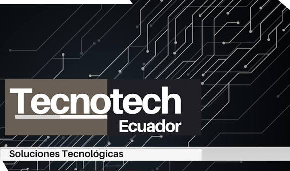

TECNOTECH ECUADOR
Área: Venta de tecnología y soporte técnico
Experiencia independiente en comercialización de equipos tecnológicos y prestación de servicios de soporte técnico bajo demanda.
Entre las actividades realizadas se incluyen soporte técnico bajo demanda, diagnóstico y mantenimiento de equipos informáticos, y asesoría en selección de soluciones y equipamiento tecnológico.
